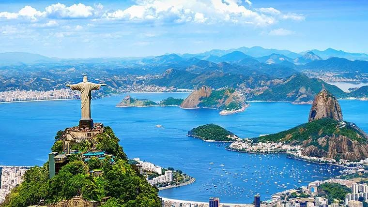

Brasil, Río de Janeiro
Río de Janeiro es la segunda ciudad más poblada de Brasil y capital del estado homónimo, reconocida mundialmente como la "Ciudad Maravillosa" (Cidade Maravilhosa) por su espectacular integración de naturaleza y urbanismo.
Ver más